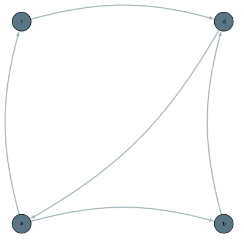

PathpyG Visualisations¶
This page provides an overview of the available visualisations and the supported backends. It also describes which displaying and saving options are available as well as the supported keyword arguments for customized plot styling.
Overview¶
The main plotting function is pathpyG.plot(), which can be used to create visualisations of both static and temporal networks.
The function supports multiple backends, each with its own capabilities and output formats.
The backend will be automatically chosen depending on the input data and the specified options.
The default backend is d3.js, which is suitable for both static and temporal networks and produces interactive visualisations that can be viewed in a web browser.
Interactive Temporal Graph Visualisation with d3.js
import pathpyG as pp
# Example temporal network data
tedges = [
("a", "b", 1),
("a", "b", 2),
("b", "a", 3),
("b", "c", 3),
("d", "c", 4),
("a", "b", 4),
("c", "b", 4),
("c", "d", 5),
("b", "a", 5),
("c", "b", 6),
]
t = pp.TemporalGraph.from_edge_list(tedges)
# Create temporal plot and display inline
pp.plot(t)
Backends¶
We currently support a total of four plotting backends, each with different capabilities making them suitable for different use cases. The table below provides an overview of the supported backends and their available file formats:
| Backend | Static Networks | Temporal Networks | Time-Unfolded Networks | Available File Formats |
|---|---|---|---|---|
| d3.js | ✔️ | ✔️ | ✔️ | html |
| manim | ❌ | ✔️ | ❌ | mp4, gif |
| matplotlib | ✔️ | ❌ | ✔️ | png, jpg |
| tikz | ✔️ | ❌ | ✔️ | svg, pdf, tex |
Details¶
- d3.js: The default backend, suitable for both static and temporal networks. It produces interactive visualisations that can be viewed in a web browser.
- matplotlib: A widely used plotting library in Python. It is suitable for static networks and produces raster graphics files.
- manim: A backend specifically designed for creating animations of temporal graphs, producing high-quality video files.
- tikz: A backend for creating publication-quality vector graphics with LaTeX-compatible output or directly compiled output as PDF or SVG.
Note
The manim and the tikz backends require additional dependencies to be installed.
Please refer to the respective sections in the Installation Guide for more information.
Saving a Plot¶
You can save plots to files by specifying the filename argument in the pp.plot() function call.
The file format will be automatically determined based on the file extension.
If no filename is provided, the plot will be displayed inline (in a Jupyter notebook or similar environment).
Customisation¶
For more advanced visualisations, PathpyG offers customisation options for node and edge properties (like color, size, and opacity), as well as support for additional backends, including manim, matplotlib, and tikz.
We provide some usage examples below, and a detailed overview of the supported keyword arguments for each backend in section Customisation Options.
Visualising Undirected Networks¶
We provide support for directed and undirected static networks.
Directed networks are visualised with arrows, while undirected networks use simple lines in all backends.
We provide an example using matplotlib below.
Undirected Static Graph Visualisation with matplotlib
You will see below that compared to the examples above, the nodes do not have arrows indicating directionality.
import torch
import pathpyG as pp
# Example undirected network data
edge_index = torch.tensor([[0, 1, 3, 3], [1, 2, 1, 0]])
g = pp.Graph.from_edge_index(edge_index).to_undirected()
# Create static plot and display inline
pp.plot(g, backend="matplotlib")
Node Labels
In the above picture, the nodes do not have labels.
This is because labels are automatically generated based on the node IDs provided in g.mapping.node_ids.
When we created the graph using the from_edge_index() method, we did not provide any specific node IDs, so no IDs were assigned and no labels were generated.
You can override the default behaviour by specifying show_labels=True in the pp.plot() function call.
Node and Edge Customisation¶
You can customise the appearance of nodes and edges in both static and temporal networks. We describe the different options below.
Static Networks¶
In all backends, you can customise the size, color, and opacity of nodes and edges.
You can specify these properties either as attributes of the PyG graph object PathpyG.Graph.data (as torch.Tensor or numpy.ndarray with one value per node/edge) or as arguments in the pp.plot() function call in three different ways: (1)
- A single value (applied uniformly to all nodes/edges)
- A list of values with length equal to the number of nodes/edges (values are applied in order)
- A dictionary mapping node/edge IDs to values (values are applied based on the IDs)
For color, you can use color names (e.g., "blue"), HEX codes (e.g., "#ff0000"), or RGB tuples (e.g., (255, 0, 0)).
You can also pass numeric values, which will be mapped to colors using a matplotlib colormap (specified via cmap).
- If both the graph attribute and the function argument are provided, the function argument takes precedence.
Custom Node and Edge Properties
In the example below, we set custom properties for nodes and edges using all three methods.
import torch
import pathpyG as pp
# Example network data
edges = [
("a", "b"),
("a", "c"),
("b", "d"),
("c", "d"),
("d", "a"),
]
g = pp.Graph.from_edge_list(edges)
# Add properties as attributes to the graph
g.data["node_size"] = torch.tensor([10, 15, 20, 15])
g.data["edge_color"] = torch.tensor([0, 1, 2, 1, 0])
g.data["node_opacity"] = torch.zeros(g.n)
# Create static plot with custom settings and display inline
pp.plot(
g,
backend="tikz",
node_color={"a": "red", "b": "#00FF00"},
edge_opacity={("a", "b"): 0.1, ("a", "c"): 0.5, ("b", "d"): 1.0},
node_opacity=1.0, # override graph attribute
edge_size=torch.tensor([1, 2, 3, 2, 1]),
)
Display Images inside your Nodes
d3.js additionally supports images as node representations.
You can specify the image source using the node_image argument.
The image source can be a URL or a local file path.
import torch
import pathpyG as pp
# Example network data
edges = [
("b", "a"),
("c", "a"),
]
mapping = pp.IndexMap(["a", "b", "c", "d"])
g = pp.Graph.from_edge_list(edges, mapping=mapping)
g.data["node_size"] = torch.tensor([25]*4)
pp.plot(
g,
node_size={"d": 50},
edge_size=5,
node_image={
"a": "https://avatars.githubusercontent.com/u/52822508?s=48&v=4",
"b": "https://raw.githubusercontent.com/pyg-team/pyg_sphinx_theme/master/pyg_sphinx_theme/static/img/pyg_logo.png",
"c": "https://pytorch-geometric.readthedocs.io/en/latest/_static/img/pytorch_logo.svg",
"d": "docs/img/pathpy_logo_new.png",
},
show_labels=False,
)
Temporal Networks¶
For temporal networks, you can also customise the size, color, and opacity of nodes and edges at each timestep.
In our understanding, a temporal network has a fixed set of nodes, but edges appear at different timesteps.
Thus, all nodes exist at all times, but edges may only exist at certain timesteps.
Therefore, edge properties can be specified for each timestep where the edge exists.
In contrast, node properties can change at specified points in time, but will remain the same for all subsequent timesteps until they are changed again.
The customisation options work similarly to static networks, with the exception that passing a dictionary for node/edge properties requires adding the timestep to the key:
Custom Node and Edge Properties in Temporal Networks
In the example below, we set the starting node_color and node_size for all nodes using graph attributes.
We further customise the edge_color for each edge at each timestep using a graph attribute.
Next, we override the node_color for node "b" at timestep 2 and for node "a" from the start using function arguments.
Finally, we use a dictionary with a tuple consisting of the source node, target node, and timestep to set the edge_size for two specific edges at specific timesteps.
import torch
import numpy as np
import pathpyG as pp
# Example temporal network data
tedges = [
("a", "b", 1),
("a", "b", 2),
("b", "a", 3),
("b", "c", 3),
]
t = pp.TemporalGraph.from_edge_list(tedges)
t.data["node_size"] = torch.tensor([15, 8, 19])
t.data["node_color"] = np.array(["blue", "green", "orange"])
t.data["edge_color"] = torch.tensor([0, 1, 2, 1])
# Create temporal plot and display inline
pp.plot(
t,
backend="manim",
node_opacity=0.5,
edge_size={("a", "b", 1): 10, ("a", "b", 2): 1},
node_color={("b", 2): "red", "a": "purple"}, # node_color for node 'a' is set to 'purple' from the start
)
Layouts¶
By default, PathpyG uses the Fruchterman-Reingold force-directed algorithm to compute node positions for static networks.
For temporal networks, the layout is computed dynamically at each timestep using the d3.js backend, while the manim backend uses a Fruchterman-Reingold layout computed on the aggregated static network by default.
Static Networks¶
You can change the layout algorithm for static networks using the layout argument in the pp.plot() function call.
networkx layouts:
We currently support most layouts via the networkx library.
See the examples below for usage.
Use "random", "rand" or None to specify a random layout.
Use "circular", "circle", "ring", "1d-lattice", or "lattice-1d" to specify a circular layout.
Use "shell", "concentric", "concentric-circles", or "shell layout" to specify a shell layout.
Use "spectral", "eigen", or "spectral layout" to specify a spectral layout.
Use "kamada-kawai", "kamada_kawai", "kk", "kamada", or "kamada layout" to specify a Kamada-Kawai layout.
Use "fruchterman-reingold", "fruchterman_reingold", "fr", "spring_layout", "spring layout", or "spring" to specify a Fruchterman-Reingold layout.
Use "forceatlas2", "fa2", "forceatlas", "force-atlas", "force-atlas2", or "fa 2" to specify a ForceAtlas2 layout.
Other layouts:
In addition to the networkx layouts, we also support:
-
Grid layout
-
Custom layout (by providing a dictionary mapping node IDs to positions)
Example

Temporal Networks¶
We apply a sliding window approach to compute layouts for temporal networks.
At each timestep, we consider a window of past and future timesteps (controlled via the layout_window_size argument) and aggregate all edges inside this window to a static graph to compute the layout.
You can either pass a fixed integer value, which will then be split equally into past and future timesteps, or a tuple specifying the number of past and future timesteps separately.
The layout algorithm can be any of the supported static layout algorithms described above.
Custom Layout for Temporal Networks
In the example below, we use a sliding window of 2, meaning that we aggregate the current and one previous timestep to compute the layout at each timestep.
import pathpyG as pp
# Example temporal network data
tedges = [
("a", "b", 1),
("a", "b", 2),
("b", "a", 3),
("b", "c", 3),
("d", "c", 4),
("a", "b", 4),
("c", "b", 4),
("c", "d", 5),
("b", "a", 5),
("c", "b", 6),
]
t = pp.TemporalGraph.from_edge_list(tedges)
# Create temporal plot and display inline
pp.plot(t, backend="manim", layout_window_size=2, layout="fa2")
Time-Unfolded Networks¶
For temporal networks, you can use the time-unfolded visualisation to show a static representation of the temporal network.
In this representation, each node is duplicated for each timestep, and edges are drawn between nodes at different timesteps to represent temporal interactions.
You can enable this visualisation by setting the "kind" argument to "unfolded" in the pp.plot() function call.
This visualisation is supported by all backends that support static networks, i.e. D3.js, Matplotlib, and TikZ.
Time-Unfolded Visualisation of Temporal Networks
In the example below, we create a time-unfolded visualisation of a temporal network using the tikz backend.
import pathpyG as pp
# Example temporal network data
tedges = [
("a", "b", 1),
("a", "b", 2),
("b", "a", 3),
("b", "c", 3),
("d", "c", 4),
("a", "b", 4),
("c", "b", 4),
("c", "d", 5),
("b", "a", 5),
("c", "b", 6),
]
t = pp.TemporalGraph.from_edge_list(tedges)
# Create temporal plot and display inline
node_color = {"a": "red", ("a", 2): "darkred"}
edge_color = {("a", "b", 2): "blue"}
pp.plot(t, backend="tikz", kind="unfolded", node_size=12, node_color=node_color, edge_color=edge_color)
Customising Time-Unfolded Visualisations
In the time-unfolded visualisation, you can still customise node and edge properties as described in the Node and Edge Customisation section.
Customisation Options¶
Below is full list of supported keyword arguments for each backend and their descriptions.
| Argument | d3.js | manim | matplotlib | tikz | Short Description |
|---|---|---|---|---|---|
| General | |||||
default_backend |
✔️ | ✔️ | ✔️ | ✔️ | Backend to use when none is specified |
cmap |
✔️ | ✔️ | ✔️ | ✔️ | Colormap (string that refers to matplotlib cmap) for scalar node/edge values |
layout |
✔️ | ✔️ | ✔️ | ✔️ | Layout algorithm for static networks (see Layouts) |
width |
✔️ | ❌ | ✔️ | ✔️ | Width of the output |
height |
✔️ | ❌ | ✔️ | ✔️ | Height of the output |
latex_class_options |
❌ | ❌ | ❌ | ✔️ | LaTeX document class options (e.g., "border=2mm") for tikz backend |
margin |
✔️ | ❌ | ✔️ | ✔️ | Margin around the plot area (in pixels for d3.js, in points for matplotlib and tikz) |
curvature |
✔️ | ❌ | ❌ | ✔️ | Curvature of edges (0: straight, >0: curved) |
layout_window_size |
✔️ | ✔️ | ❌ | ❌ | Size of sliding window for temporal network layouts (int or tuple of int) |
delta |
✔️ | ✔️ | ❌ | ❌ | Duration of timestep in milliseconds (ms) |
separator |
✔️ | ✔️ | ✔️ | ✔️ | Separator for higher-order node labels |
orientation |
✔️ | ✔️ | ❌ | ✔️ | Orientation of the time-unfolded network plot ("up", "down", "left", or "right") |
| Nodes | |||||
size |
✔️ | ✔️ | ✔️ | ✔️ | Radius of nodes (uniform or per-node) |
color |
✔️ | ✔️ | ✔️ | ✔️ | Node fill color |
opacity |
✔️ | ✔️ | ✔️ | ✔️ | Node fill opacity (0 transparent, 1 solid) |
image_padding |
✔️ | ❌ | ❌ | ❌ | Padding around node images (in pixels) |
| Edges | |||||
size |
✔️ | ✔️ | ✔️ | ✔️ | Edge width (uniform or per-edge) |
color |
✔️ | ✔️ | ✔️ | ✔️ | Edge line color |
opacity |
✔️ | ✔️ | ✔️ | ✔️ | Edge line opacity (0 transparent, 1 solid) |
Legend: ✔️ Supported ❌ Not Supported
You can find the default values for each argument in pathpyG.toml located in the pathpyG installation directory.
Node and Edge Keyword Arguments
The node and edge keyword arguments listed above represent the default options that are specified via the pathpyG.toml configuration file.
You can change these defaults using keyword arguments in the pp.plot() function call as follows:
import pathpyG as pp
# Example network data
g = pp.Graph.from_edge_list([("a", "b"), ("a", "c")])
# Create network plot and display inline
pp.plot(g, node={"opacity": 0.2}, filename="d3js_node_opacity.html")
However, if you want to change either color, size, or opacity for nodes or edges, the preferred way is to use the dedicated keyword arguments described in the previous sections.
For more details and usage examples, see Manim Visualisation Tutorial,Visualisation Tutorial and Develop your own plot Functions